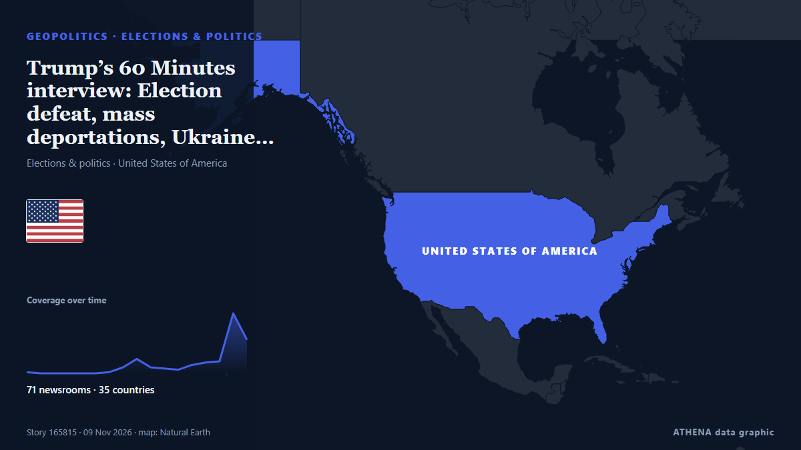

ATHENA Glaux Intelligence — Παγκόσμια ειδησεογραφική ανάλυση — κάθε αριθμός εξηγημένος
Κάθε είδηση, ελεγμένη σε πολλές χώρες.
Το ATHENA Glaux παρακολουθεί 632 ειδησεογραφικά μέσα σε όλο τον κόσμο. Μια είδηση γίνεται επαληθευμένο γεγονός μόνο όταν την αναφέρουν ανεξάρτητα μέσα. Κάθε γεγονός δείχνει ποιος το ανέφερε πρώτος και έναν βαθμό κινδύνου με τους λόγους του.
Αναφορές έρχονται από ανεξάρτητα μέσα — όταν δύο συναντηθούν στην ίδια ιστορία, γίνεται επιβεβαιωμένο γεγονός.
Τρεις τρόποι να διαβάσετε σήμερα
Ξεκινήστε από αυτόν που ταιριάζει στον χρόνο σαςΕπαληθευμένα γεγονότα
Κατά σειρά έκτασης της κάλυψης
- After JD Vance, now Trump Jr blames Iran war for US midterms defeat83 μέσα · 39 χώρεςΚίνδυνος 7.1
- Poland calls Krakow shooting rampage 'terrorist' attack56 μέσα · 35 χώρεςΚίνδυνος 7.5
- Explosions heard on Iran's Qeshm Island, state media reports67 μέσα · 34 χώρεςΚίνδυνος 6.1
- Paraguay’s former president charged after bank collapse50 μέσα · 32 χώρεςΚίνδυνος 7.3
- Trump says he was ‘only kidding’ about making UFC’s Dana White next press secretary67 μέσα · 31 χώρεςΚίνδυνος 0.0
Γραφείο Ανάλυσης
Κάντε μια ερώτηση και διαβάστε τεκμηριωμένη αξιολόγηση μιας βασικής είδησης, μαζί με το τι θα την διέψευδε.
Ανοίξτε το Γραφείο Ανάλυσης ›Πώς ελέγχει το ATHENA μια είδηση
- ΣυλλογήΟι αναφορές φτάνουν από ανεξάρτητα μέσα σε πολλές χώρες.
- ΑντιστοίχισηΌταν δύο μέσα συναντιούνται στην ίδια είδηση, γίνεται επαληθευμένο γεγονός.
- ΕξήγησηΚάθε γεγονός δείχνει ποιος ήταν πρώτος, πόσο εξαπλώθηκε και γιατί ο κίνδυνος είναι αυτός.

ΓεωπολιτικήTrump’s 60 Minutes interview: Election defeat, mass deportations, Ukraine, Iran, business interests and UFOs
With the political constraints imposed by the US midterm elections lifted, Donald Trump may become more erratic and unpredictable. από The Scotsman
Οι τίτλοι των ειδήσεων παρουσιάζονται στα αγγλικά, όπως δημοσιεύτηκαν.
Paraguay’s former president charged after bank collapse
The accounting black hole at Ueno Bank swallows public funds, leaves thousands of citizens without access to their deposits and pushes Paraguay into its worst institutional crisis in years. από Euronews English
Explosions heard on Iran's Qeshm Island, state media reports
TEHRAN, Nov 3: Several explosions were heard from the direction of the sea near Iran's southern port city of Bandar Lengeh on Monday, according to the IRGC-affiliated Fars news age... από Arab Times

After JD Vance, now Trump Jr blames Iran war for US midterms defeat
Says war in Iran had weighed on Republican candidates, even as voters backed his handling of it. από Express Tribune
Riyadh financial district targeted, Aramco skyscraper damaged
An Aramco building in Riyadh was targeted in an "attempted attack", the Saudi energy ministry said on Sunday, with eyewitnesses telling AFP the skyscraper sustained damage, after the Saudi-led… από Al-Monitor
With Stephen Miller at the helm, Trump charts a course for confrontation
The architect of the Trump administration’s brutal crackdowns on immigration and dissent was already known as “the prime minister.” Now he’ll work as the chief of staff. από Wired
Γεωπολιτική, Πολιτική & Ασφάλεια
Περισσότερα ›Europeans to join Ukraine peace talks in Abu Dhabi: Berlin
Lavrov says Abu Dhabi talks will address principles for a Russia-Ukraine peace deal, as top advisers from Germany, France and the UK attend to represent Ukrainian and European security interests. από TRT World
- Εκλογές & πολιτική
Trump questions midterm elections integrity after previously accepting results
- Συμμαχίες & συνθήκες
Syria arrives at the Mecca pact with an occupation and a war next door
- Τρομοκρατία & ασφάλεια
Türkiye offers condolences to Poland after Krakow terrorist attack
- Εκλογές & πολιτική
US top Democrat backs impeachment of Pete Hegseth
Οικονομία, Χρηματοοικονομικά & Αγορές
Περισσότερα ›Civil servant who secretly held five jobs found guilty of fraud
Kashim Chowdhury had secretly held multiple public sector jobs on full-time salaries. από BBC Business
- Προβλέψεις & κίνδυνος ύφεσης
Botswana Raises Growth Forecast to 3.8%
- Μετοχές, ομόλογα & αγορές
Seoul stocks buck gains on Wall Street to open lower
- Απασχόληση & μισθοί
Pope Leo Mass in Buenos Aires draws record crowd of 2.5 million, Vatican says
- Απασχόληση & μισθοί
French PM brings forward hike in minimum wage to calm protesters
Εμπόριο, Βιομηχανία & Υποδομές
Περισσότερα ›Steel plant blast kills 16 in western Turkey
ANKARA, Nov 9 - A blast at a steel and iron manufacturing plant in western Turkey on Monday killed 16 people, President Tayyip Erdogan said after a cabinet meeting. από The Straits Times
- Δασμοί & έλεγχοι εξαγωγών
China extends suspension of 24 pct additional tariff on U.S. goods for two months
- Αερομεταφορές, σιδηρόδρομος & οδικές
Dense fog expected overnight as yellow warning issued
- Αερομεταφορές, σιδηρόδρομος & οδικές
Top Vietnamese leader attends ceremony marking 10 years of Vietnam Airlines-ANA Holdings strategic cooperation
- Ναυτιλία & λιμάνια
Iran says 2-day proposal to US offers roadmap for restoring security in Strait of Hormuz
Ενέργεια, Πόροι & Περιβάλλον
Περισσότερα ›Handala warns Israelis of 'life without water and electricity' in new leaflet campaign
Handala hacker group claims to have distributed hundreds of thousands of threatening leaflets across Tel Aviv, warning that power plants, oil refineries and desalination facilities could be targeted… από Tehran Times
- Πετρέλαιο & φυσικό αέριο
Saudi Arabia says East-West oil pipeline targeted in Medina, operations unaffected
- Κλίμα & κλιματική πολιτική
Singapore calls for focus on climate action, not new targets at COP31
- Πυρηνική ενέργεια
IAEA condemns deadly drone strikes near Ukraine nuclear plant
- Κλίμα & κλιματική πολιτική
IEA Backs Electrification Efforts at COP31 Climate Summit
Τεχνολογία, ΤΝ & Κυβερνοασφάλεια
Περισσότερα ›France accuses Iran of supermarket fridge hacking
The cyber-attack last month saw fridges and freezers in hundreds of supermarkets across France heated up. από BBC News
- Επεξεργαστές & υπολογιστική
Nvidia's shares slide as chip giant probes CEO Jensen Huang over spy claims
- Επεξεργαστές & υπολογιστική
Megaspeed chip smuggling probe puts Nvidia NCP certification under scrutiny
- ΜΜΕ & παραπληροφόρηση
Lights to go out at Russia's Novaya Gazeta, independent newspaper known for fearless reporting
- Τεχνητή νοημοσύνη
Meta expands AI age checks for Instagram teens as lawsuits mount
Επιχειρήσεις, Εταιρείες & Επενδύσεις
Περισσότερα ›Honda will spend $3B on a new Ohio car plant built around hybrids
Honda will invest $3B in a new Ohio assembly plant, its first new US vehicle plant since 2008, opening in 2029 with capacity for 240,000 mostly hybrid vehicles a year. από The Next Web
- Κλάδοι & εταιρικοί κίνδυνοι
Malta’s Creative Community Hits Back At Culture Minister Over Controversial Comments
- Διοικήσεις & στελέχη
One of the killers of James Bulger to remain in prison
- Εταιρική στρατηγική
'No excuse for what I did': Nvidia CEO Jensen Huang admits to affair with suspected Chinese spy; firm launches probe
- Νεοφυείς & καινοτομία
Meta’s Dave Wehner leaves to become CFO of AI start-up Fireworks
Η σημερινή εικόνα
| 17:00 | 444 |
|---|---|
| 18:00 | 344 |
| 19:00 | 338 |
| 20:00 | 240 |
| 21:00 | 250 |
| 22:00 | 326 |
| 23:00 | 297 |
| 00:00 | 301 |
| 01:00 | 365 |
| 02:00 | 270 |
| 03:00 | 407 |
| 04:00 | 455 |
| 05:00 | 487 |
| 06:00 | 669 |
| 07:00 | 246 |
| 08:00 | 176 |
| 09:00 | 593 |
| 10:00 | 1085 |
| 11:00 | 1077 |
| 12:00 | 698 |
| 13:00 | 797 |
| 14:00 | 664 |
| 15:00 | 1015 |
| 16:00 | 1137 |
Κίνδυνος των σημερινών γεγονότων
Με την ευρύτερη κάλυψη
Αναδυόμενα σήματα
- Απότομη αύξηση · Ενεργό τώραCEO Jensen Huang
- Απότομη αύξηση · Ενεργό τώραKhor Mor
- Απότομη αύξηση · Ενεργό τώραMinutes
- Απότομη αύξηση · Ενεργό τώραCrete
- Απότομη αύξηση · Ενεργό τώραIntelligence and espionage
Επίσημες προειδοποιήσεις
- M 6.1 - Fiji regionM6.1 · USGS ·
- Cyber chief: UK facing AI-powered attacks on critical infrastructure within two yearsadvisory · UK National Cyber Security Centre ·
Το ATHENA στο Telegram
Μπείτε δωρεάν στην ομάδα ATHENA Glaux και λάβετε τις ειδήσεις τη στιγμή που δημοσιεύονται εδώ:
- έκτακτα γεγονότα με κίνδυνο 6 ή περισσότερο
- ωριαία σύνοψη των κορυφαίων γεγονότων
- ενημερώσεις των παρακολουθήσεων κινδύνου (Ορμούζ, Ερυθρά Θάλασσα, Ταϊβάν, κυρώσεις κ.ά.)
- την ημερήσια ενημέρωση κάθε πρωί στις 10:00 (ώρα Ελλάδας)
- εβδομαδιαία προοπτική
- επίσημες προειδοποιήσεις, αναδυόμενα σήματα και κινδύνους σε άνοδο
Πατήστε το κουμπί, ανοίγει το Telegram, πατήστε «Join». Οι αναρτήσεις είναι στα αγγλικά· μπορείτε να τη σιγάσετε ή να αποχωρήσετε όποτε θέλετε. Δεν έχετε Telegram; Είναι δωρεάν στο telegram.org.
Παρακολούθηση κινδύνων
Περισσότερα ›Παγκόσμιοι κίνδυνοι — εβδομάδα 46, 2026 (9–15 Νοε) ›